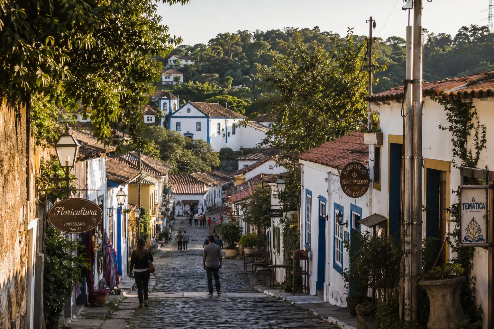

Poucas regiões da Grande SP concentram tanta variação de qualidade em um mesmo mercado. Em Embu das Artes, encontramos operações que preocupam — e também algumas das residências mais humanizadas que já avaliamos. Entender a diferença é o que este guia se propõe a fazer.

Embu das Artes é conhecida pela sua vocação cultural — as feiras de artesanato, as casas históricas e o ritmo próprio de uma cidade que cresceu com personalidade. Mas nos últimos anos, a região ganhou um segundo capítulo pouco discutido: o crescimento acelerado de residências para pessoas idosas.
A combinação de imóveis com preço de metro quadrado mais acessível, proximidade com a Régis Bittencourt e a Raposo Tavares, e um ambiente mais calmo do que os grandes centros urbanos criou as condições para que residenciais sênior proliferassem na região.
O problema é que essa proliferação aconteceu de forma desigual — com algumas operações estruturadas de verdade e muitas outras que não tiveram a mesma base para crescer com qualidade. Para uma visão mais ampla sobre o que diferencia asilo, casa de repouso e residencial sênior, vale ler esse guia antes de visitar qualquer opção na região.
A localização geográfica de Embu das Artes é um de seus pontos mais fortes para o cuidado ao idoso. A cidade é servida diretamente pela Rodovia Régis Bittencourt e tem acesso complementar pela Raposo Tavares, conectando famílias de diferentes partes da Zona Sul e do corredor sudoeste da Grande SP.
Comparado a regiões como Vargem Grande Paulista, Embu tende a ser mais próxima para famílias que moram na Zona Sul de São Paulo — o que pode tornar as visitas regulares mais viáveis no dia a dia.
Acesso direto pela BR-116 — principal eixo de conexão com o Sudoeste da Grande SP.
Conexão com Cotia, Osasco e Zona Oeste, facilitando visitas de famílias de diferentes regiões.
Menos tráfego em horários convencionais — o que torna a ida e volta das visitas mais tranquila.
Uma reflexão sobre proximidade: muitas famílias priorizam a distância no início da busca — mas o que realmente define a qualidade da visita é o estado emocional ao chegar, não o tempo de deslocamento. Veja também nosso guia sobre como escolher uma casa de repouso na Lapa para entender como outros fatores pesam nessa decisão.
Poucas regiões da Grande SP apresentam uma variação tão pronunciada de qualidade quanto Embu das Artes. A mesma cidade que abriga algumas das residências mais humanizadas que a SAFE ILPIS já avaliou também tem uma concentração significativa de operações que levantam preocupações sérias.
Entender esse contraste antes de começar as visitas é o que separa uma família que encontra a residência certa de uma família que começa em desvantagem. Sobre os riscos de casas de repouso muito baratas, temos um artigo completo que explica o que está por trás dos preços abaixo do mercado.
O que encontramos em operações problemáticas da região
O que encontramos nas residências excepcionais da região
O que torna Embu das Artes diferente: em muitas regiões, os bons residenciais se destacam facilmente. Em Embu, as melhores opções frequentemente operam de forma discreta — sem marketing agressivo, sem fachadas impecáveis — porque construíram sua reputação pelo cuidado, não pela aparência. Encontrá-las exige quem as conhece de perto.
Em anos de avaliações em toda a Grande SP, Embu das Artes figura entre as regiões onde encontramos residências com a cultura de cuidado mais autêntica. Não são as mais bonitas em fotos. Não têm os sites mais elaborados. Mas no dia a dia de quem mora nelas, há algo que poucos residenciais de qualquer região conseguem replicar.
Para entender o grau de dependência da pessoa idosa e saber qual estrutura faz mais sentido, recomendamos essa avaliação antes de visitar qualquer residência em Embu das Artes — ou em qualquer outra região.
"Em Embu das Artes, o maior risco não é a escassez de boas opções.— Equipe SAFE ILPIS
É acreditar que a primeira visita é suficiente para identificá-las."
Em Embu das Artes, a variação de qualidade entre residências é tão alta que uma análise superficial — como a maioria das famílias consegue fazer por conta própria — raramente revela o que realmente importa. A SAFE ILPIS investiu anos de avaliações repetidas para construir uma visão real do mercado local.
Cada residência foi visitada presencialmente, com verificação documental junto à Vigilância Sanitária e análise de rotinas, equipe e qualidade operacional real.
Alta proporção de risco: quase 62% das residências identificadas em Embu das Artes apresentou algum problema relevante durante a avaliação. Uma proporção significativamente acima da média de outras regiões da Grande SP que analisamos.
Em Embu das Artes, mais do que em qualquer outra região que analisamos, a orientação prévia faz diferença real. A diferença entre uma boa experiência e uma decisão arriscada muitas vezes está em uma única visita sem preparação.
Em uma região com alta variação de qualidade, a avaliação não pode se limitar a uma visita única. A SAFE ILPIS acompanha os residenciais ao longo do tempo — porque a qualidade de uma operação não é um estado fixo, é um processo contínuo.
Alvará ativo, CNPJ regular, responsável técnico — verificados junto à Vigilância Sanitária, não apenas com o estabelecimento.
O vínculo real entre equipe e residentes — observado em visitas repetidas, não em apresentações preparadas.
Dimensionamento por turno, estabilidade do quadro e capacidade real de resposta a diferentes graus de dependência.
Acessibilidade, segurança e ambientes — verificados presencialmente, não por fotos de divulgação.
Abertura para visitas não agendadas, comunicação proativa sobre intercorrências e clareza contratual.
Operações que crescem com intencionalidade — não as que apenas crescem. A direção importa tanto quanto a situação atual.
7 parceiras credenciadas, avaliadas presencialmente e com histórico real. Nossa equipe ajuda a encontrar a certa para o perfil do seu familiar — sem custo para a família.
✓ Sem compromisso · ✓ No seu tempo · ✓ 100% gratuito para famílias
7 residências credenciadas. Anos de avaliações. E uma equipe que já sabe onde estão as joias ocultas da região.
Quero conhecer as melhores opções — grátis